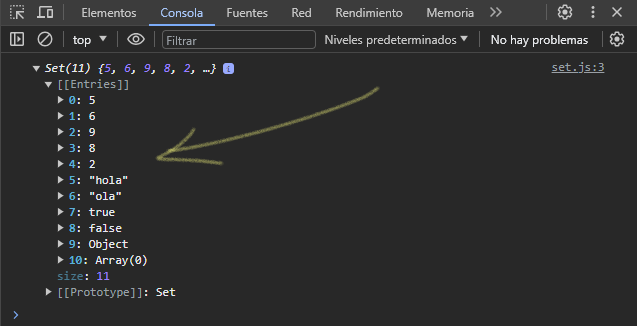

Creando un nuevo Set
let datos = new Set([5,6,9,9,9,8,2,2,2,"hola", "ola", true, false, {}, []])
Para crear un nuevo objeto Set podemos usar su constructor, y los valores que ingresemos van dentro de unos corchetes como si fuera un arreglo. El objeto Set nos permite almacenar distintos valores, pero, sin que se repita un mismo valor mas de 1 vez. En el ejemplo anterior, vemos como ingresamos valores repetidos, mostraremos el Set en consola:
Para poder ver la longitud del objeto Set, llamamos a su propiedad size. Nos devuelve un Number con la longitud del Set.
console.log(datos.size)
Para agregar un nuevo dato a nuestro objeto Set, llamamos a su método de instancia .add(value), el cual agrega un nuevo dato que le indicamos por parámetro.
datos.add("ulisesafcdev")
datos.add("odiseodev")
Para saber si hay un elemento existente dentro del set, llamamos a su método de instancia .has(value), este devuelve un valor booleano en caso de existir o no el elemento que le indicamos como parámetro.
console.log(datos.has("hola"))
console.log(datos.has(false))
Para eliminar un elemento en especifico, llamamos a su método de instancia .delete(value), este devuelve un booleano en caso de que se haya eliminado el elemento indicado como parámetro.
datos.delete(true)
datos.delete(false)
Para eliminar todos los elementos del objeto Set, llamamos a su método de instancia .clear(), este elimina todo sus elementos dejándolo vació.
datos.clear()